地政学
シカゴは五大湖と大平原の接点で、鉄道、空港、運河が米国内陸を束ねる。東海岸と西部、カナダ、メキシコ湾岸を結ぶ物流の節点であり、農産物、金融、政治運動も集まる中西部の大都市だ。選挙や労働運動にも影響を持つ。

🇺🇸 アメリカ合衆国 / 北米 / World City Atlas
ミシガン湖、シカゴ川、鉄道、商品取引、移民文化、建築、分断、冬の気候が重なる米国中西部の中心都市。
都市の骨格
ミシガン湖岸、シカゴ川、運河、鉄道、空港、商品市場が、東海岸、大平原、五大湖、南部を結ぶ都市圏を作った。
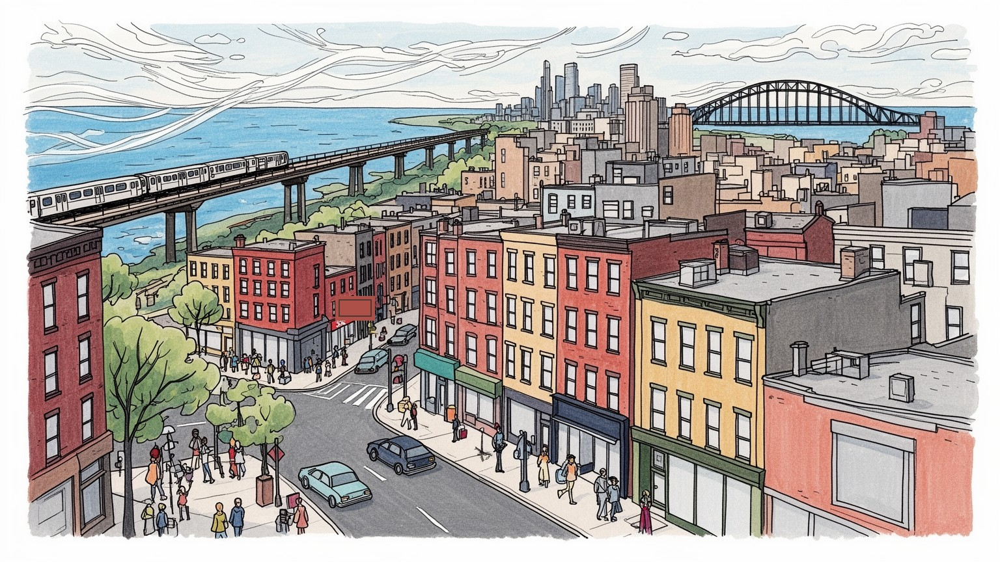
シカゴは五大湖と大平原の接点で、鉄道、空港、運河が米国内陸を束ねる。東海岸と西部、カナダ、メキシコ湾岸を結ぶ物流の節点であり、農産物、金融、政治運動も集まる中西部の大都市だ。選挙や労働運動にも影響を持つ。
食肉、穀物、鉄道の時代から、商品取引、保険、医療、大学、物流、食品、文化産業へ重心を移した。高層オフィスの専門職と、倉庫、配達、清掃、介護、飲食の仕事が都市を同時に動かす。組合政治も暮らしに強く関わる。
黒人教会、カトリック教区、ユダヤ教、イスラム教、移民の寺院が地域社会を支え、ブルース、ジャズ、ゴスペル、演劇、建築文化を育てた。祭りと食文化は地区ごとの記憶を街路に残す。信仰は互助の場所でもある。
ループ、湖岸公園、リバーウォーク、美術館、球場、民族地区は旅行者を引きつける。住民には冬の寒さ、通勤、学校、治安、家賃、分断が日常の条件で、美しい水辺と生活課題が近い。街歩きはその両面を映し出す。
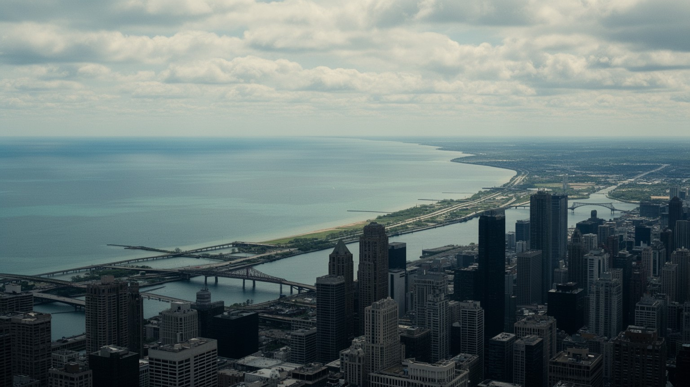
シカゴは海に面していないが、ミシガン湖とシカゴ川によって水の都市として成長した。五大湖の西南端に位置することは、東部の港湾都市と大平原の農業地帯を結ぶうえで決定的だった。川の流路を変え、運河でミシシッピ川水系へ接続した歴史は、都市が自然条件を作り替えて物流、衛生、洪水対策を同時に進めてきたことを示す。湖岸は現在、公園、砂浜、博物館、道路、住宅、高層オフィスが並ぶ公共空間であり、都市の景観価値を支える。しかし水辺は単なる眺めではない。飲料水、下水、高潮、凍結、風、湖岸侵食、気候変動が市民生活を左右する。高層ビル街から少し歩けば広い水面が現れる構造は、密度の高い経済活動と開放的な余白を近づける。だが湖岸への近さは地区ごとの富と交通条件によって経験が違う。南側や西側の住民にとって、水辺へ行く交通費や時間は小さくない。再開発された川沿いの歩道が都心の魅力を高める一方、排水施設や古い護岸の維持は地味な公共投資として残る。冬の凍結、春の増水、夏の水遊び、秋の強風は、同じ湖岸を季節ごとに別の場所へ変える。橋を渡る通勤者や観光船からも、産業都市と水辺の余暇が同時に見える。水をどう扱うかは、市政の基本でもある。シカゴを読む時、湖と川は背景ではなく、産業、衛生、観光、住宅、政治を結び直す都市の骨格である。
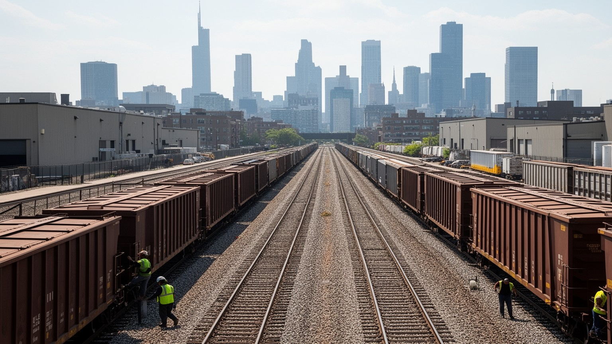
シカゴの重要性は、高層ビルの多さだけでなく、見えにくい物流の厚みにある。十九世紀以降、鉄道会社がここに集まり、穀物、食肉、木材、石炭、工業製品、人を全米へ送った。現在も都市圏には巨大な操車場、インターモーダル施設、倉庫、食品流通、トラック輸送、空港貨物が重なり、北米のサプライチェーンを支える。オヘア国際空港は旅客の玄関であると同時に、時間価値の高い貨物を動かす施設でもある。物流は経済を支えるが、騒音、排気、道路混雑、低賃金労働、労災、倉庫立地をめぐる地域負担も生む。線路や高速道路は都市を結ぶ一方、地区を分断し、住宅地の空気や歩行環境に影響する。シカゴでは中心部の華やかな商業と、郊外や南西部の倉庫労働が同じ都市圏経済を作っている。商品が早く届く便利さの裏には、夜勤、寒さ、重い荷物、交通事故、組合交渉がある。さらに鉄道会社同士の接続、港湾の小さなボトルネック、踏切の待ち時間は、市民の生活にも響く。気候災害や労働争議で輸送が止まれば、遠い地域の棚や工場にも影響が出る。物流都市としてのシカゴを見ることは、消費社会の速度を誰が支えているのかを地図上で確かめることでもある。便利な配送は、都市の周縁で働く人の時間を消費している。倉庫周辺の学校や住宅の環境も、物流政策の一部である。高速道路の修繕も生活問題だ。
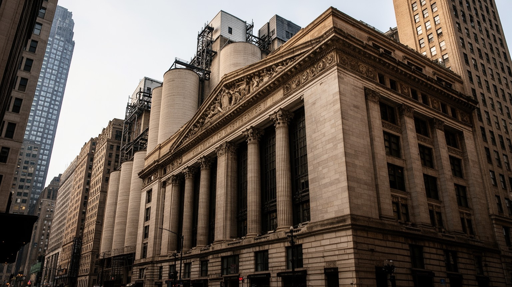
シカゴの金融は、ニューヨークの証券市場とは異なる歴史を持つ。大平原から集まる穀物や家畜を標準化し、価格を先に決め、リスクを売買する必要から、商品取引と先物市場が発展した。シカゴ商品取引所や周辺の金融機関は、農産物、金利、通貨、エネルギー、株価指数などを扱い、世界の価格形成に影響を与えている。これは抽象的な画面上の取引であると同時に、農家、食品会社、航空会社、年金基金、投資家の判断へつながる仕組みである。ループのオフィス街には銀行、保険、法律、会計、コンサルティング、広告、メディアが集まり、大学や研究機関が人材を供給する。金融は高い賃金と税収を生む一方、リスクが都市の外へ見えにくく拡散する側面もある。穀物倉庫と取引所の歴史を重ねると、シカゴの都市経済は農業地帯から切り離されたものではなく、むしろ内陸の生産を数字へ翻訳する装置だったことが分かる。電子取引が主流になっても、法務、監督、通信、清算、データ管理の専門職は都心に残る。市場の数字は冷たく見えるが、その変動はパンや燃料の値段、農家の借入、航空券の費用にも波及する。若い専門職が集まる一方、都心の昼食店や清掃の仕事も市場の景気に揺れる。規制当局との距離も重要だ。価格を扱う都市は、天候、戦争、輸送、労働争議、消費者の食卓までを遠くから結ぶ。
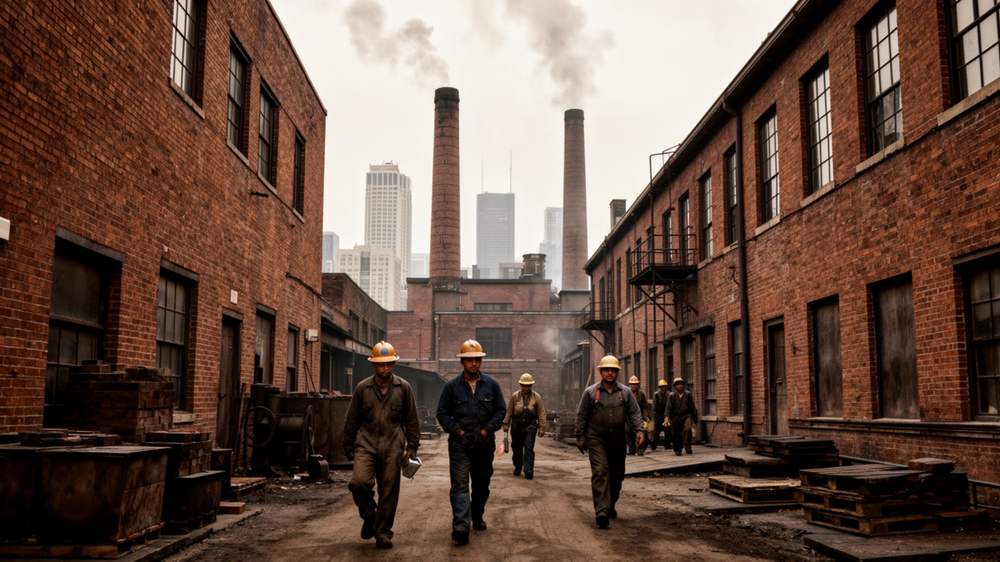
シカゴはかつて食肉加工、鉄鋼、機械、印刷、鉄道工場で知られ、米国の工業化と労働運動を象徴する都市だった。ストックヤード、パッキングハウス、労働争議、移民労働者の過酷な職場は、都市の富と社会改革の両方を生んだ。現在、重工業の比重は下がったが、食品加工、医療、大学、物流、建設、製造、清掃、飲食、介護、警備、公共サービスは都市の日常を支える。ダウンタウンの専門職だけを見れば、労働の全体像は見えない。早朝の列車で通う病院職員、郊外倉庫の夜勤、学校給食、除雪、道路補修、ホテル清掃が、観光や金融と同じ経済を成り立たせている。シカゴは組合政治の伝統も強く、賃金、年金、学校、警察、公共交通をめぐる交渉が市政の大きなテーマになる。産業構造が変わっても、労働の尊厳と地域の雇用をどう守るかは変わらない課題である。移民労働者や若い黒人、ラテン系住民がよい仕事へ入れる経路を作れるかも重要だ。医療や大学の成長も、周辺地区に安定した雇用を返せるかで評価が変わる。労働の歴史を記憶することは、現在の低賃金サービス職を見る目を変える。職業訓練と交通の接続も欠かせない。地域の声も必要だ。工場跡地の再開発は新しい住宅やオフィスを生むが、古い雇用を失った地区に技能訓練、交通、学校投資が届かなければ、都市の成長は均等に広がらない。
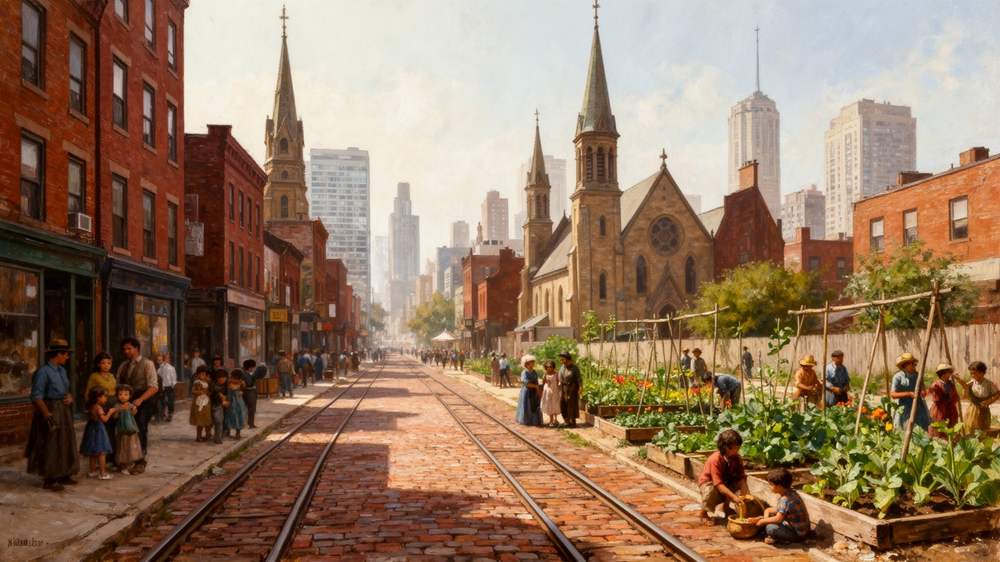
シカゴの社会地図は、ヨーロッパ系移民、メキシコ系や中南米系住民、アジア系コミュニティ、南部から北上した黒人の大移動によって作られた。ポーランド系、アイルランド系、イタリア系、ユダヤ系、ギリシャ系、リトアニア系などの教会、会館、食堂、祭りは、労働と信仰を支える地区の核になった。黒人コミュニティはブロンズビルを中心に音楽、新聞、教会、政治を発展させたが、住宅差別、赤線引き、学校分離、警察暴力、雇用差別にも直面してきた。プエルトリコ系やメキシコ系の地区は、工場労働、壁画、商店街、家族ネットワークを通じて都市文化を広げた。シカゴの多様性は食や祭りとして明るく語られやすいが、その背後には住める場所を制限され、住宅ローンを拒まれ、高速道路や再開発で地区を切られた歴史がある。現在も所得、学校、治安、健康、交通の差は人種化された地理と結びつく。新しい移民は空港、工場、飲食、介護、清掃、建設で働き、古い民族地区に別の言語と店を重ねている。人口減少が進む地区では、空き地の使い方も共同体の未来を左右する。都市を理解するには、民族地区を観光的に歩くだけでなく、なぜ境界がそこにあり、誰が移動を許され、誰が閉じ込められたのかを見る必要がある。移民と大移動はシカゴを豊かにしたが、平等な都市にする仕事は今も続いている。
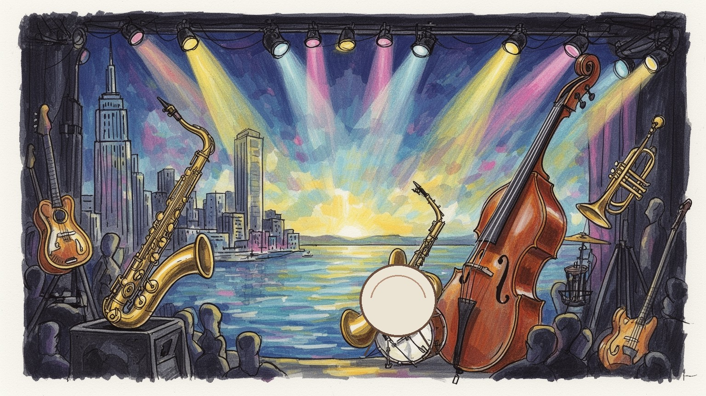
シカゴ文化を語る時、ブルース、ジャズ、ゴスペル、ハウスミュージック、演劇、即興コメディ、文学、公共美術を外すことはできない。南部から移住した黒人音楽家は、デルタのブルースを電気楽器と都市のリズムへ変え、クラブ、教会、ラジオ、レコード会社を通じて世界へ広げた。ゴスペルは礼拝の音楽であると同時に、共同体の痛みと希望を表現する文化だった。劇場と即興コメディの伝統は、政治風刺、移民のユーモア、労働者の言葉を舞台へ上げ、映画やテレビにも人材を送った。美術館、大学、図書館、独立書店、詩の朗読、フェスティバルは、経済都市とは違う時間を作る。だが文化は自然に残るものではなく、家賃、助成、学校教育、夜間交通、安全、観客の層に左右される。音楽地区が観光化すれば、演奏者や小さな店が押し出されることもある。学校の音楽教育、教会の合唱、地域ラジオ、小劇場の稽古場は、世界的な名声より地味だが、次の表現を育てる土台である。移民の食堂や近所の祭りも、舞台芸術と同じくらい都市文化の担い手である。記憶を残す小さな会場も大切だ。シカゴの文化の強さは、苦難を美化することではなく、移住、差別、労働、信仰、寒い夜の社交を表現へ変えてきた点にある。街角の教会、地下のクラブ、湖岸の野外フェスが同じ都市の声を別々の音で鳴らしている。
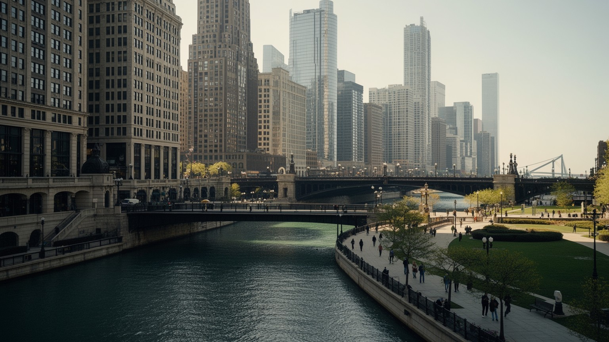
シカゴは近代高層建築を語るうえで欠かせない都市である。大火後の再建、鉄骨構造、エレベーター、耐火技術、商業地の地価が結びつき、ループ周辺には新しい都市建築の実験が集まった。シカゴ派のオフィスビル、フランク・ロイド・ライトの住宅、ミース・ファン・デル・ローエの近代主義、現代の超高層は、都市が仕事と住まいの形をどう変えてきたかを示す。建築は観光資源であると同時に、資本、技術、労働、規制の産物である。リバーウォークやミレニアムパーク、湖岸公園は、市民と旅行者が都市の景観を共有する場所になった。特に湖岸を公共空間として守る思想は、シカゴの誇りであり、中心部の密度を和らげる重要な装置である。だが美しい公共空間は、誰でも使えるように見えて、交通費、治安感覚、警備、ホームレス対策、イベントの商業化によって利用のしやすさが変わる。高層建築の足元にあるロビー、駅、店舗、広場が閉じれば、都市の壮観さは私有化される。建物の保存と新しい開発のせめぎ合いも、歴史を誰の利益に使うかを問う。子どもが座れる場所の有無も公共性を測る。建築を眺めるだけでなく、歩道の幅、ベンチ、日陰、トイレ、駅からの近さまで見ると、都市が公共性をどれだけ具体的に設計しているかが分かる。シカゴの高さは、地上の使いやすさによって初めて市民の資産になる。
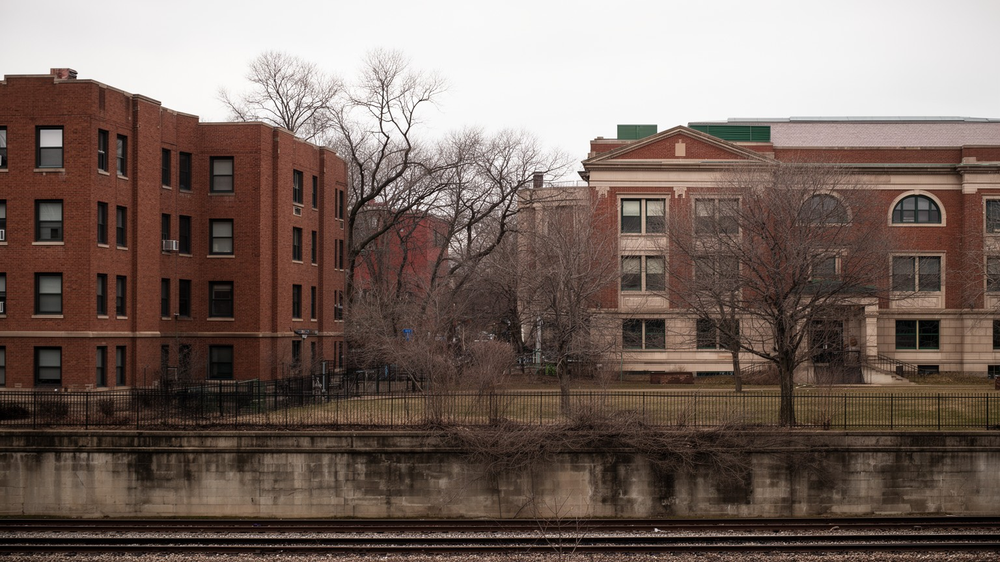
シカゴの暮らしを考える時、住宅と人種分断を避けることはできない。二十世紀の住宅差別、赤線引き、契約売買、公共住宅の集中、郊外化、高速道路建設、学校区の境界は、黒人やラテン系住民の選択肢を狭め、資産形成の差を大きくした。高層公共住宅の失敗だけを語ると、そこに住んだ人々の生活や支援の不足、雇用の喪失、差別的な融資制度は見えなくなる。現在も北側、南側、西側で所得、学校の資源、医療、食料品店、治安、交通、住宅価格の差がはっきり表れる。中心部や湖岸に近い地区では再開発と高家賃が進み、長く住んできた住民が押し出される不安もある。一方で、一戸建ての街区、教会、理髪店、学校、ブロックパーティーは、地区の誇りと相互扶助を支える。住宅政策は建物の供給だけではなく、学校、警察、公共交通、雇用、健康、土地信託、家賃支援と結びつくべき問題である。空き家や差し押さえ、老朽住宅の修繕不足は、地域の安全感や税収にも影響する。家を失わない仕組みは、治安対策や教育政策とも深くつながる。家賃の上昇は家族の移動を迫る。学校選びにも響く。シカゴの分断は地図上の線に見えるが、実際には通勤時間、子どもの進学、病院までの距離、保険料、買い物の選択肢として日々経験される。都市の公平さは、どの地区で生まれても同じ可能性を持てるかで測られる。
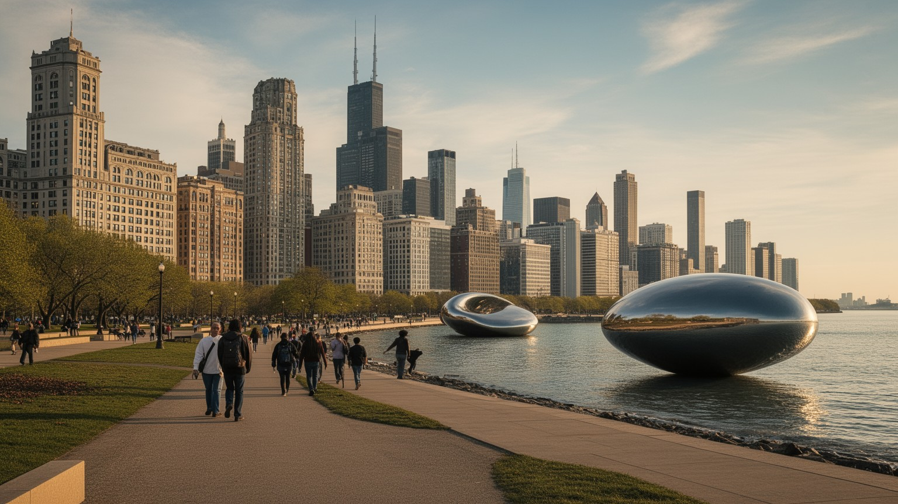
シカゴ観光は、ミレニアムパーク、アート・インスティテュート、リバーウォーク、建築クルーズ、ネイビー・ピア、ウィリス・タワー、ジョン・ハンコック周辺、フィールド博物館、球場、湖岸の砂浜を結ぶと、短い滞在でも都市の重層性が見える。建築クルーズでは高層ビルの美しさだけでなく、川を物流と下水のインフラとして作り替えた歴史も分かる。美術館と博物館は世界的なコレクションを持ち、大学、学校、観光経済をつなぐ文化施設である。カブスやホワイトソックスの球場は、地区の誇りと都市の分断を同時に映す。湖岸公園はランニング、サイクリング、ピクニック、花火、音楽フェスの舞台になり、住民にも旅行者にも開かれた余白を提供する。だが観光の明るさの背後には、ホテル清掃、飲食、警備、交通、イベント設営、除雪、救急対応の労働がある。深皿ピザやホットドッグのような名物も、移民の食文化、労働者の食事、観光商品化が重なった都市の入口である。冬の閑散期や大会期間の混雑も、観光業で働く人の収入を揺らす。人気地区の消費だけで都市を理解すると、南側や西側の文化、移民商店街、住宅問題は見えにくい。シカゴを旅するなら、湖岸の名所から民族地区、音楽の場、近隣の食堂へ視線を広げたい。水辺の美しさは入口であり、都市の本体はその周囲で暮らす人々の時間にある。
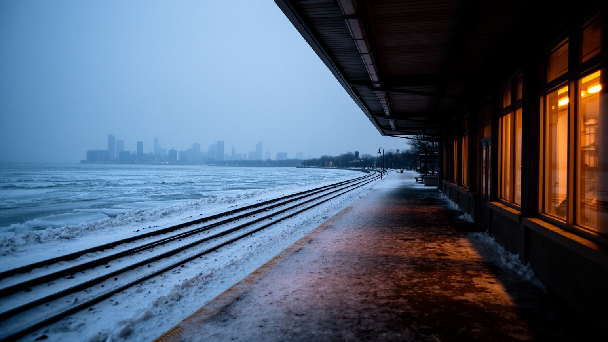
シカゴの冬は都市の強さと弱さを露わにする。ミシガン湖から吹く風、氷点下の寒さ、雪、路面凍結は、通勤、学校、医療、物流、除雪、ホームレス支援、暖房費に直結する。高層ビル街の風は体感温度を下げ、バス停で待つ人、屋外労働者、高齢者、障害者、低所得世帯ほど負担が大きい。夏には熱波、豪雨、湖岸の浸食も問題になり、気候変動は季節ごとのリスクを強める。都市の防災は、除雪車や排水施設だけでなく、避難所、公共図書館、暖房補助、住宅の断熱、停電対策、多言語情報、近所の見守りによって支えられる。シカゴを総合的に読むには、湖と川、鉄道、商品取引、移民、音楽、建築、住宅分断、観光を同じ地図に置く必要がある。都市の魅力はスカイラインや湖岸の明るさにあるが、その光景を維持するのは、寒い朝に働く清掃員、運転士、看護師、教師、配達員、除雪作業員である。さらに冬の通学路、暖房の壊れた住宅、凍った駅の階段、救急車の到着時間は、都市の制度が細部で試される場になる。気候への備えは、富裕な地区だけの快適さで終わってはならない。読まれるべき都市は中心部だけではない。地区の記憶、労働、信仰、学校、食卓を重ねて初めて全体が見える。世界都市としてのシカゴの価値は、金融や物流の規模だけでなく、厳しい気候と不平等の中で、誰を守る都市制度を作れるかにかかっている。